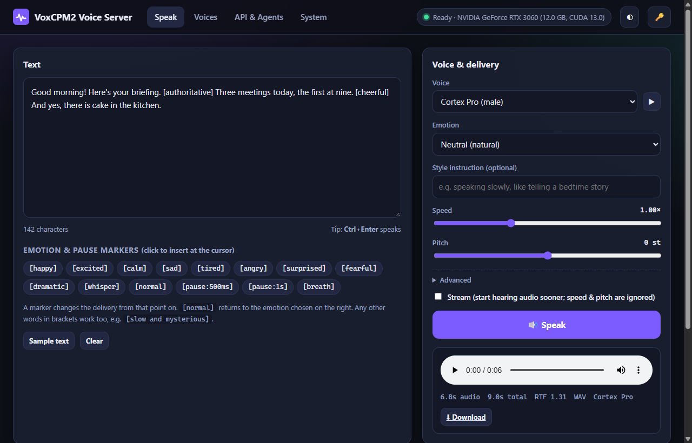

🎙️ VoxCPM2 Voice Server
Private, studio-quality text-to-speech that runs on your own computer. Every clip below was generated locally on an RTX 3060. Nothing was sent to a cloud service.

Aura Studio
Natural conversational delivery, with a pause marker.
Hi! I'm Aura, running entirely on your own computer. [pause:400ms] No cloud, no subscription, and nothing ever leaves this machine.
Solas British
Inline emotion markers: calm → excited → whisper.
[calm] Welcome back. [pause:500ms] [excited] Today we finally ship version one! [whisper] Don't tell anyone just yet.
Vesper Noir
Low, dramatic narration.
[dramatic] The rain hadn't stopped for three days. [pause:600ms] [calm] And neither had the phone calls.